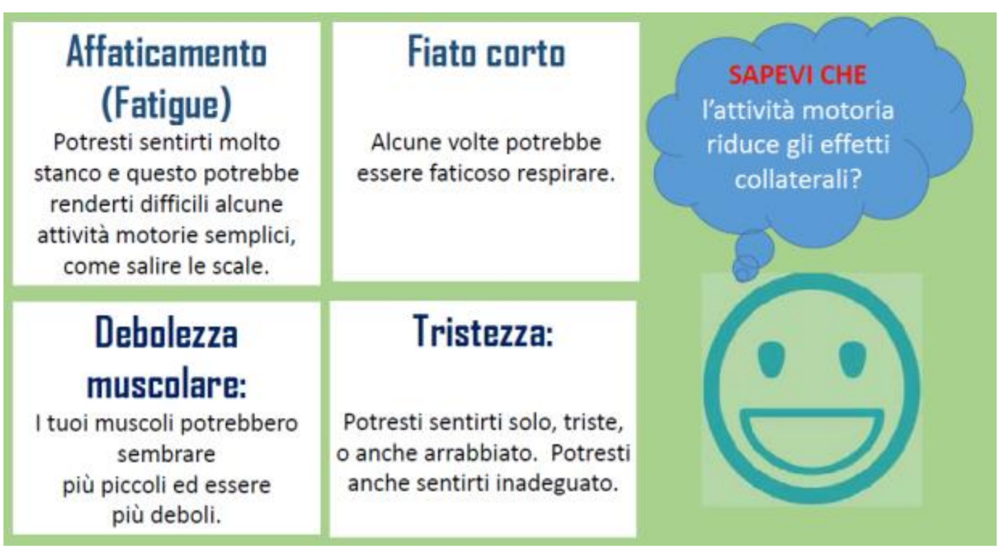
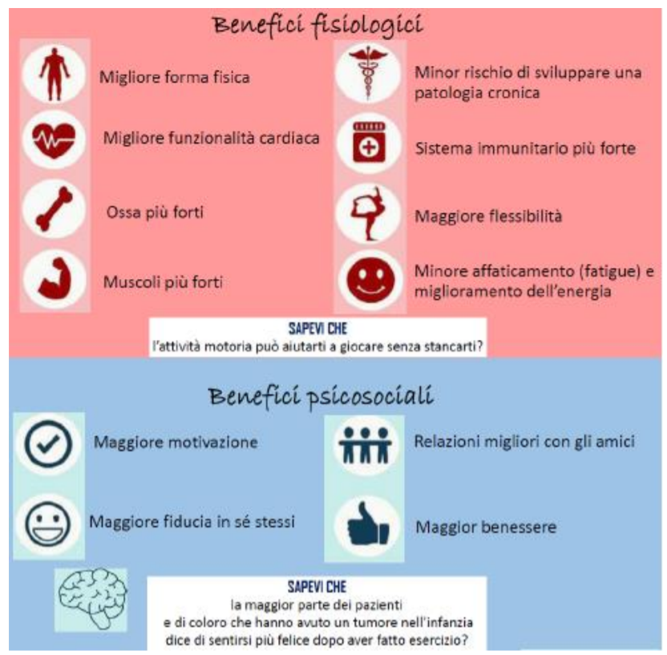
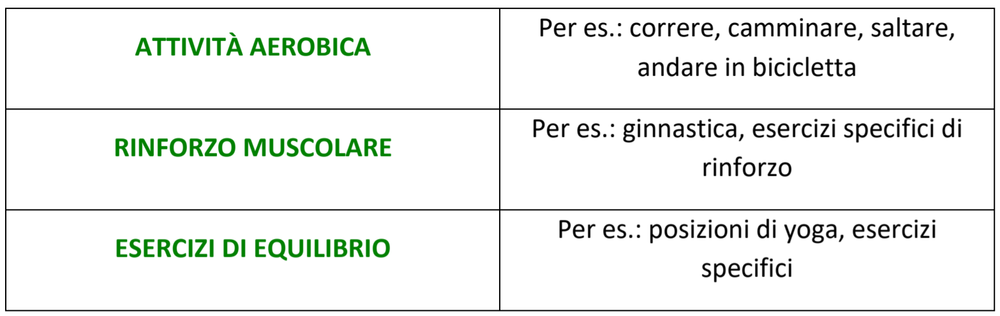
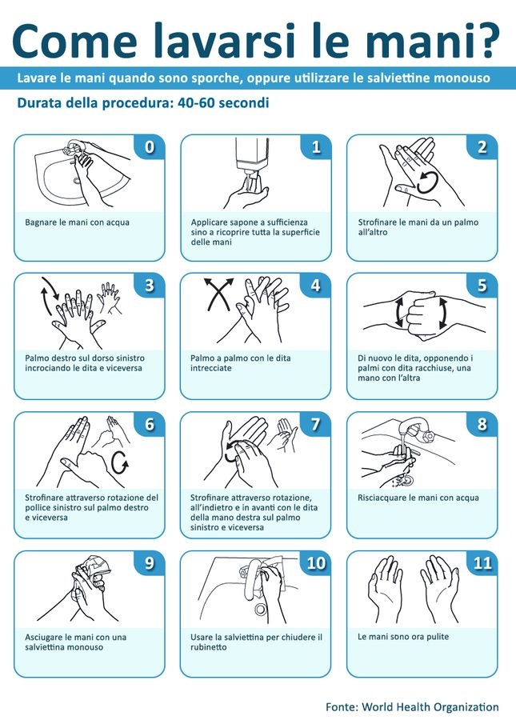
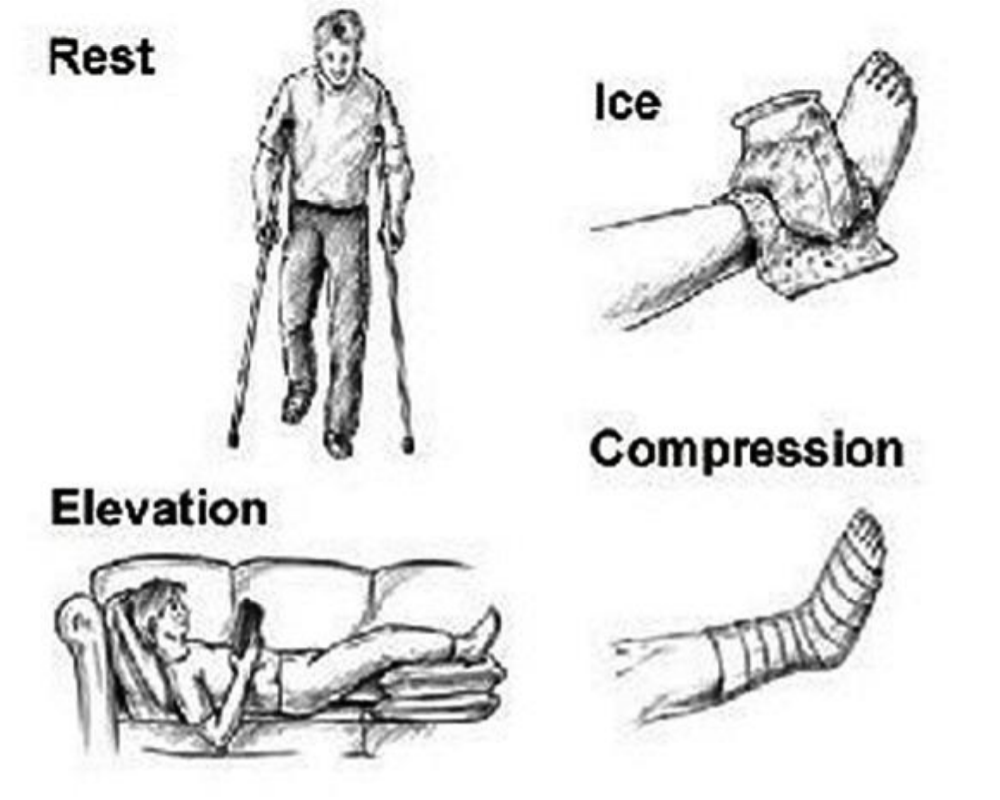

Ciao ragazzi, mamme e papà!
Di seguito troverete delle indicazioni per mantenervi attivi e in forma in modo
sicuro ed efficace anche in questo periodo dove siamo chiamati a stare in casa
e dove le cure farmacologiche proseguono. Vi chiediamo di leggere
attentamente le istruzioni per l’uso prima di cominciare ed eventualmente di
consultare il vostro terapista di riferimento se avete dubbi/domande.
PERCHÉ è importante che continui a mantenermi attivo?
Sappiamo che le terapie oncologiche hanno degli effetti collaterali che
possono condizionare il modo in cui ci si sente durante la giornata:

Non ti capita mai di sentirti stanco e triste? L’attività motoria può aiutarti a
sentirti meglio e a prevenire, ridurre o eliminare alcuni effetti collaterali.
Svolgere un po’ di movimento ti aiuta ad avere dei benefici fisiologici e
psicosociali, questo funziona soprattutto per te ma anche per tutta la tua
famiglia! Contrariamente, l’eccessiva inattività e lo stare troppo a riposo può
essere controproducente per il percorso di recupero!

DOVE posso svolgere gli esercizi?
Fino al termine dell’emergenza sanitaria attuale l’ideale è svolgere gli esercizi
all’interno della vostra casa possibilmente in una stanza dove riuscite ad avere
un po’ di spazio sicuro (con pochi spigoli e senza oggetti fragili che si possono
rompere facilmente). Se avete uno spazio esterno come un balcone, un
giardino o un cortile in cui potete stare solo voi sfruttatelo, svolgere gli esercizi
all’aria aperta sarà sicuramente più divertente!
QUANTE volte a settimana devo fare attività motoria e gli esercizi
riabilitativi?
Prima di rispondere a questa domanda bisogna innanzitutto fare chiarezza
rispetto alla differenza tra attività motoria ed esercizio riabilitativo. L'attività
motoria si correla al mantenimento di uno stile di vita attivo; l’organizzazione
mondiale della sanità (OMS), infatti, raccomanda ai ragazzi dai 5 ai 17 anni di
svolgere almeno 1 ora al giorno di attività motoria.
Questi 60 minuti dovrebbero essere divisi in:

Potrebbe capitare che a causa di diversi motivi non riuscite a svolgere la vostra
ora di movimento ogni giorno, se succede non preoccupatevi! Assicuratevi
però di fare attività di tipo aerobico, di rinforzo e di equilibrio almeno 3 volte
a settimana, ricordate che l’attività motoria può sempre essere adattata e
modificata in base ai vostri bisogni e necessità. Il vostro terapista vi aiuterà a
creare il programma di movimento migliore per voi per poter avere uno stile di
vita attivo!
Ma allora che cosa si intende per esercizio riabilitativo? L’esercizio riabilitativo
invece è specifico e personalizzato ed è prescritto dal terapista della
riabilitazione (neuropsicomotricista o fisioterapista) con l’obiettivo di
recuperare/mantenere il maggior livello di autonomia possibile. La
strutturazione dell’esercizio riabilitativo varia in base a molti fattori (obiettivo,
età, tipologia di esercizio, ecc.), per questo sarà il vostro terapista ad indicarvi
il numero di ripetizioni ed i tempi adatti a voi. Questo sito, infatti, ha lo scopo
di facilitare non solo il mantenimento di uno stile di vita attivo durante questo
particolare periodo ma anche di proseguire il vostro programma riabilitativo in
modo sicuro ed efficace.
COME posso praticare attività motoria in modo sicuro ed efficace?
È importante sapere che nei bambini e negli adolescenti l’attività motoria
comprende il gioco, lo sport, gli spostamenti, i lavori domestici, la ricreazione,
l’educazione fisica o esercizi strutturati nel contesto familiare, scolastico ed
extrascolastico. Attività come vestirsi, lavarsi, cucinare, ordinare la stanza
possono essere dei momenti di movimento non troppo faticosi e fattibili tutti i
giorni. Anche alternare giochi più attivi ad alcuni più statici può aiutare a non
stancarvi troppo divertendovi! Nelle giornate in cui vi sentite meno in forma
cercate di mantenere uno stile di vita il più attivo possibile seguendo questi
consigli.
Per svolgere un’attività motoria strutturata potete utilizzare questo sito: come
prima cosa dovrete selezionare le attività in base alla vostra età. All’interno
della cartella troverete vari tipi di attività (aerobica, di rinforzo, di equilibrio,
ecc.). Seguite sempre i consigli del vostro terapista, sarà lui a indicarvi il tipo
di esercizio o attività da svolgere, la quantità e a cosa prestare attenzione. In
linea generale vi raccomandiamo di “iniziare piano e progredire lentamente”.
Durante l’attività motoria ricordatevi di idratarvi in modo adeguato, ogni tanto
fermatevi a fare un brindisi bevendo un bicchiere d’acqua! Anche
un’alimentazione sana ed equilibrata vi aiuta a mantenervi in forma e ad avere
le energie necessarie per muovervi. In caso di forte sole ricordate di applicare
la crema solare, indossare un cappellino e se fa molto caldo allenarvi
all’ombra.
Dopo aver finito l'attività motoria e il vostro programma riabilitativo
ricordatevi sempre di lavare bene le mani rispettando questi passaggi:

Approfittate di questo momento per imparare a lavare le mani nel modo
corretto e quando sarete pronti insegnatelo a tutta la famiglia!
In allegato trovate le regole da seguire in questo momento di emergenza
Covid-19, potete stamparle e appenderle per essere sicuri di ricordarle!
Infine ricordate:
- di segnalare al medico oncologo, al personale infermieristico o al
fisioterapista eventuali dolori articolari/muscolari, gonfiori, formicolii o
limitazioni del movimento;
- di eseguire il programma di esercizi consigliati e prescritti dal vostro
terapista, questo vi assicurerà di muovervi in modo efficace e in
sicurezza;
- di monitorare il livello di sforzo ed eventuali dolori durante l’esercizio
aiutandovi con le scale di misura, il vostro terapista vi spiegherà come
utilizzarle;
- di compilare il vostro –Diario di allenamento- in modo che possiate
vedere quanto lavoro avete fatto ed aiutare il terapista a modificare il
training “su misura” per voi;
- in caso di infortunio ricordate, in questo particolare periodo, di non
accedere al Pronto Soccorso ma di chiamare il pediatra di famiglia o il
medico oncologo o il terapista di riferimento.
Di seguito vi riportiamo un breve schema di soccorso che potete effettuare in
caso di infortunio (dolore muscolare, distorsione):
- RIPOSARE= mettere subito a riposo completo l’articolazione/arto in
questione;
- APPLICARE del GHIACCIO= applicare immediatamente il ghiaccio per
periodi di 20 minuti ogni ora/al bisogno;
- COMPRIMERE= eseguire una compressione sulla zona in questione
facendo una fasciatura abbastanza stretta per tenere la zona protetta
ma non troppo stretta da bloccare la circolazione sanguigna;
- ELEVARE= elevate l’arto sofferente in modo da posizionarlo al di sopra
del livello del cuore per favorire il ritorno venoso.

BUON ALLENAMENTO!!!
1 / 6

2 / 6

3 / 6

4 / 6

5 / 6

6 / 6

❮
❯